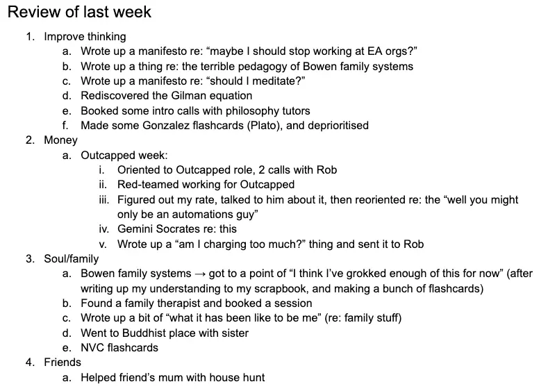
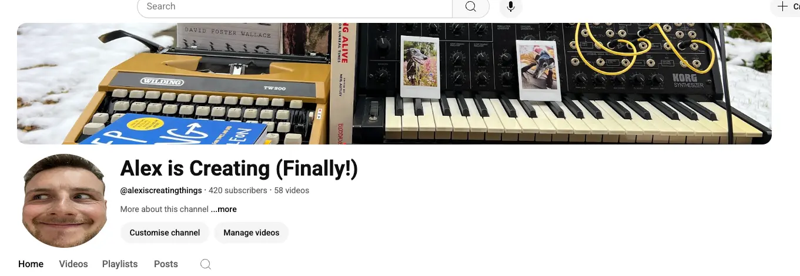
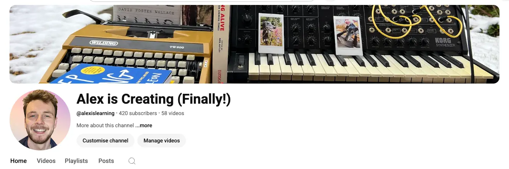

- 2025-07-21
1. Bump from my friend Simmo
- I shared the following screenshot in my triad group chat 👇

- and got a voice note reply from Simmo:
- “Awesome, Alex - yeah, I’m curious, why is that you’re publishing less publicly than substack?”
- *“My sense is that at least a quarter of this stuff, somewhere between 25%-75% of the stuff you publish on your personal site, would be really good content
- it’s quite unique, it’s really analytical, it’s very skilled and shows people how to think, as well as shows people the content of the stuff that you’re learning,
- and [our mutual friend] and I often find it really valuable - even though we’re much closer to you (maybe we’re a target audience in the way because we know you), but I think there’s a bigger target audience than you maybe realise”
- “I guess my value proposition is like
- *if it feels as frictionless to post some of this stuff more publicly
- you can build a following, and you can build an extra revenue stream ultimately if you build a following,
- and my sense is that if you keep publishing as you are doing but more publicly, within a year you’re gonna have loads of followers, and clients, potential customers, you can monetise something, pretty much anything, probably wouldn’t be much work.”
- “So I guess it’s a curiosity about - I’m not sure what the reasoning is that you’re doing everything semi-privately, and publishing very little in the more public domains of Substack etc”
2. So yeah, what’s up with that?
- I’m no stranger to posting publicly, I don’t have significant emotional blocks against it (I used to, and now they’re all gone)
3. Previous emotional blocks
- Because I love doing Alex Anthropology, lol
- Also kinda inspired by Should I meditate regularly? (2025-07-20) yesterday, where I found it really useful (and fun) to gather all my previous experiences with meditation, before then tackling the “why am I not doing it right now, and should I?” question
3a. No emotional blocks, just a kid
- Feel free to skip this bit - not particularly relevant, just fun for me to go down memory lane
1. First ever youtube video - me as a ~10 year old playing the guitar
- Omg I totally forgot about this, lmao
- I remember being in my primary school uniform, and filming myself playing the “Old Snake” theme from Metal Gear Solid 4 on my classical guitar, right way back when when I couldn’t actually play the guitar
- I remember an adult commenting on it like “you’re not very good, are you”, lmao
- Omg, me and my friend at primary school also made videos of us skateboarding, this also just came back to me. I remember editing them on Windows Movie Maker at school and showing them to our class, lmao. Probably with Green Day as the backing track. (We were shit at skateboarding, lol)
2. Vlogging as a teenager
- I made maybe 3 vlogs as a teenager, and liked it. However, was definitely scary! I remember getting a few comments, and someone commenting like “hey, come back :(” when I stopped posting, which was cute
- One involved me on a walk during a rare snow day - I remember filming me opening the curtains and going “it’s snowing!!”, and filming myself making a snow angel, and then talking at the camera as I walked by the river
- It felt like a teenage experiment rather than something I was like, trying to do regularly
3. Tweeting during school
- I tweeted loads during school, to essentially no one, lol
3b. Emotional blocks as an “adult”1
1. Post-rationalist Twitter & Substack
A) Being a lurker
- I discovered the post-rationalist/tpot space (see Should I meditate regularly? (2025-07-20))
- Around the age of 26
- But I was a lurker for a good long while - for whatever reason I didn’t want to tweet
- I was pre-stream entry - socially anxious, kinda sad, etc
- I think lurker-ism came down to:
- Feeling like a nobody
- Feeling like you don’t have anything “interesting” to say. Unlike the “big accounts” that you follow, who have an established POV, a feedback loop, etc, you’re just some random dude
B) Vipassana retreat → insight
- During my 10 day retreat, I had the update of “oh, I want to have creative expression, I want to have a voice! I have things to say!”
C) Tweeting way more, and starting a substack
- So, after the retreat, I started tweeting a bunch
- I quickly made some nice “mutuals” (people who, you reply to their stuff, they reply to your stuff, now you’re friends and support each other)
- Twitter with mutuals immediately feels wayyyy better. From “tweeting into the void” to “tweeting to my 5-20 people who I interact with ~daily”
- I also made a Substack
- First post, “Paper journaling is better, actually*” → because I did a bunch of paper journaling during the meditation retreat
- This reminded me how much I love writing!
- I was always weirdly good at writing, like at school I was (if I do say so myself) the best in my class all the way up to A Level, and it was always just effortless somehow
- There’s a Sasha Chapin thing about “if you’re wondering what you’re talented at, just ask yourself ‘what do you think other people are weirdly bad at’”
- And also, look at me recording myself reading my first ever Substack post out loud, lol. I have a big “attention seeker” side. Call it being a Leo, or an Enneagram 3, or something.
- Then I wrote “Consensus-ism (part 1)” (400 views, nice!), “My 10-day silent meditation retreat didn’t work*”, “The meditation retreat was working”
- First post, “Paper journaling is better, actually*” → because I did a bunch of paper journaling during the meditation retreat
- Sadly this twitter account eventually got suspended because they thought I was a bot, I think because I was using a VPN and working from public library wifi in Toronto
- Substack about this
2. Youtube as an adult
A) Attempting to appear in videos with Simmo
- Me and Simmo worked on a youtube channel in Asia for a little bit
- I tried recording myself for one video and I was just so stilted and awkward lol, it was a total no go
B) ~Stream entry to the rescue
- I had my ~stream entry experience (see Should I meditate regularly? (2025-07-20))
- And then immediately, my adult fear of being in front of the camera dropped to 0, as I no longer had social anxiety
- Made a vlog of me at Life Itself in France (where I was living at the time) and was just totally chill
C) Making music/vlogs - “Alex is Creating Things (Finally!)”
- Tada! (Youtube channel)
- I realised that I wanted to try making music and vlogs
- There was an initial block of like “oh god, but I’m shit at music”
- Also “oh god, it’s cringe to make a video that only gets like 20 views”
- However, it quickly became very enjoyable. I think once I pulled the trigger and made the first video, I ended up publishing like 3 in the first day, and then a bunch for the next few weeks
- Post-stream entry, so being in front of a camera felt totally fine
- And I got comments pretty quickly! So that was great
- It felt kind of cringe posting from a place of low status (“I’ve moved back in with my mum and I don’t know what I’m doing with my life!”), but there was a much stronger feeling of (1) pride (2) excitement (this rules, I couldn’t do this before, this feels so easy!) (3) creative expression
- I stopped posting when my “oh yes, I definitely want to make music, that’s my ‘thing’” story stopped feeling true (which kind of happened because I got my first ever “fan email” and was like “huh, this is kinda nice, but… idk if I care anymore?“)
4. Why am I liking this website so much?
It’s ultra-low friction
- I’m talking to myself, really
- Unlike a Substack post, I can just say “see this post from yesterday”
- It’s the Lemon tree → lemon curd → lemon pie 🍋 analogy → it’s ultra low effort to make a lemon. Whereas, to port a post to substack (to make lemon curd) requires some extra work
- I’m writing in an Obsidian vault, doing a Git command, and boom, it’s published
- I can write in this bullet-point format, it can be scrappy and rough. Vs to port a post to Substack → need to change to paragraphs, write better (I mean, I don’t have to, but you know, the incentive is there)
5. Current emotional blocks re: posting more publicly?
Block 1 - “posting stuff from here won’t make sense”
- I do have a sense that this “nuts and bolts of my thinking” stuff is interesting to my close friends because I talk to them every day, they have the front-row seat, they have a lot of context re: what I’m thinking about etc, they’re interested in ~similar things
- Vs imagining posting this stuff more publicly, I have a sense of like “I’m not Scott Alexander, no one is gonna care”
Counterpoint 1: maybe it’s more interesting than I think
- As Simmo said (admittedly as a “close friend target audience”, but still):
- somewhere between 25%-75% of the stuff you publish on your personal site, would be really good content
- it’s quite unique, it’s really analytical, it’s very skilled and shows people how to think, as well as shows people the content of the stuff that you’re learning,
- and [our mutual friend] and I often find it really valuable - even though we’re much closer to you (maybe we’re a target audience in the way because we know you), but I think there’s a bigger target audience than you maybe realise”
- I do have a personal sense that the stuff I’m learning about is relevant, cool, I’m at my own cutting edge. And the way I learn, the way I’m improving my thinking, etc.
- Maybe “grokking the uniqueness of what I’m doing here” could be useful
Counterpoint 2: lemon harvesting
- Keep this place for lemon harvesting → I don’t have to change how I use this site
- But intentionally also create lemon curd - e.g., 2 substack posts a week, 1 youtube video a week, get back into twitter, etc
- This place will actually lead to better Substacks, tweets, videos
- This is a place where I think more thoroughly than I ever have before. So I could write about a topic, and then turn it into a video/substack post, after a decent amount of (novel, for me) pre-thinking
- Explore lemons in a low friction, discursive, low pressure way. Then, “ooh, this one in particular would make some great curd” → move to the 2nd layer, make a youtube video
Counterpoint 3: synergies & coherence
- From a quick gut check - I actually really like the idea of “every youtube video has an associated substack post + scrapbook page”
- Youtube vs writing have different strengths
- You can’t go as deep via a video, it’s essentially TV (see the book Amusing Ourselves to Death (read 1))
- But, you can grow an audience faster there, and you can show more of yourself, your personality and vibe, because it’s a video of you, the person. Also you can have fun with editing and visual variety etc
- Also, bringing together my various interests, that have so far been silo’d
- I’ve only experienced what it’s like to have a youtube from one tiny niche part of my personality
- It could be much more profound to do a “here’s whatever I’m interested in right now” thing
- Rob Hardy’s idea of “1000 True Fans”
Block 2 - Lack of a coherent story/reason
- Time to do a Gilman Equation
- The benefits of getting back to public posting haven’t felt obvious or salient
- The “status quo” of posting here has been feeling great
- The “cost of posting more publicly” is higher than the benefits (because I haven’t elucidated the benefits)
“Returning to YouTube” blocks
1. Audience-based guilt
- The below two are like “I feel guilt about the people who subscribed”
- But ultimately, I was making the videos for myself
- So, if I wanna return and talk about something wildly different - totally fine to do!
Block 1a - “Gear change!”
- I got to ~400 subscribers during my “Alex is Creating Things (Finally!)” era, as a very particular version of myself
- the Alex who was leaning into creative expression, making music for the first time, etc
- There was no mention of other “eras”, e.g. post-rationalism/tpot
- So I’ve felt some aversion to returning and being like “actually that was only a part of me and now I want to share totally different things” (like e.g., the stuff I’ve been writing about on here
Counterpoint - who gives a shit ✅
- I can literally make a video that’s like “hey, so that was me in a very particular era, now my interests have shifted somewhat, here’s what I’m currently thinking about”
Block 1b - feel bad to have just disappeared
- Had a few people comment like “hey, where did you go? :(” and “where did your videos go?” (because I hid a bunch of them for a bit, because they felt low status whilst I was in my “Effective Altruist job-hunting era)
- I feel bad that ~400 people followed me and I just stopped uploading without a goodbye
Counterpoint - who gives a shit ✅
- I was a tiny channel, and one channel amongst probably millions
- I wouldn’t have broken anyone’s heart by stopping posting. Some people may have been like “aw man, I was enjoying your ‘song a day’ series!” (and they commented as such!), but then within 5 minutes they’d be on to the next thing
- Also, some people might be like “yay, you’re back!”, which will be nice
So, what I can do
- Make a “sorry for disappearing!” video
- Talk about what I’ve been up to, what I’m currently thinking about, how I’m not making music atm
- Good chance that people would have just subscribed for me & my vibe
- Gg ez
2. YouTube” production-based blockers
- Making youtube videos is high-friction (if you want to be non-rambly)
- I really liked making off-the-cuff ones
- Vs, video essay-type ones took a lot of hours
- A post on this website → you can say so much more, more discursively, better, with footnotes and interlinking notes etc
- Youtube feels shallower → it’s the Amusing Ourselves to Death (read 1) thing of “TV vs books”
- But that’s ok → I can keep writing too
”Returning to Twitter” blocks
1. Less Twitter engagement
- Since I lost my ~700 follower twitter and now only have ~120 followers, it’s way less fun to tweet, as I get less engagement
2. Less interest in/patience for twitter
- I go on there for like 5 mins a day and am just like “yuck!”
- I think when I had less self-certainty (or something like that), I’d go on there lots, hoping to pick up nuggets of wisdom
- Whereas now I go on there and it feels much more like this hose-pipe of ~nonsense. Stuff that’s just got nothing to do with what I’m currently thinking about, just a deluge of contradictory opinions, etc
- I don’t want to engage with people on there, I don’t want to have mutuals. But, if I only tweet and don’t read tweets, then that’s quite a one-sided relationship, and kind of anti-social.
- Are there any people who I actually would want to have as mutuals?
I feel aversion to tpot/post-rationalism, now
- I don’t want to tweet about this stuff any more
- Maybe the trick is just to tweet more about what I’m currently thinking about, and see if I can find people who are on the same vibes
- E.g., family systems, family therapy (rather than “solo healing”)
- E.g., Socrates, “learning how to think” (rather than post-rationalism which actually has ~poor epistemics, “vibes based”, and therefore, currently aversive to me)
“Returning to Substack” blocks
- I have fewer blocks here - I’ve written a few recently and it’s felt good
- I definitely have a bit of resistance to spamming people’s email inboxes
- But you know, they signed up, they can unsubscribe, innit
”Substack is the new twitter”
- Could experiment with the Substack “posts” feature or whatever it’s called
6. Quick “Gilman Equation”
”The perceived value of the new”
- I’m making a bunch of stuff, but no one is seeing it
- I know that I really like people seeing my stuff
- Feels great to get youtube views, substack views, twitter likes
- Feels great to build a following (got to 400 youtube subscribers, 700 twitter followers, without a plan)
- Virtuous loop
- I keep doing what I’m doing
- I share it more (e.g., youtube, substack, twitter)
- I get feedback
- That encourages me to keep going, makes it feel more collaborative/community-based
- I grow a following
- That makes doing what I’m doing even more fun
- It even makes money at some point?
- Etc
- I think I’ve already kind of solved the hardest bits:
-
- “What should I make content about” → I’m already making stuff daily. I’ve honed my “what matters to me” compass a lot over the past few years. From “I have no preferences” to “I know what is important for me to work on right now”
-
- “I’m scared of publishing publicly” → I’m not!
- It feels like I’m already most of the way there, and now it’s just the “solve for distribution” thing
-
- Synthesising all my interests into one ~project
- Rather than youtube just being for making music, it’s for whatever I’m thinking about
- Substack, Twitter and YouTube (and this site!) are all brought together under the same banner of “Alex is Learning"
"The perceived value of the old”
- This current posting is a bit of a dead end
- I share in my triad group chat, and that feels good, but it of course won’t lead to any growth
- I’m growing/learning a lot personally
- But sharing it with others would provide a great boost
- My youtube channel - subscribers are leaving, it’s a shame to let it die
- My substack - no way for new people to find it, as I don’t tweet any more
”The perceived cost of the change”
- “I feel blocked re: posting to youtube” → this now feels resolved, as I’ve brought the blockers to the light, and they’re not a big deal
- I have the video editing skills from the last time I did it → just need to dust them off, no big deal
- I need to figure out how to tweet more…
Unify my online presence!
- “Twitter and Substack Alex” haven’t met “YouTube Alex”, those “audiences” are totally different
- Merge them all under the “Alex is Learning” banner
- Make a YouTube video about how I’m returning, and how I want to broaden my scope
- Have fun!
Excitements for returning to YouTube
- I didn’t talk about tpot, post-rationalism, my overall journey, my substack, etc. I was just “guy who was born 1 month ago and is trying to make music”. No talk about my previous life (although it did come out in songs, of course)
- I can imagine that embracing much more of my life, not feeling like I have to be in a “niche”, could feel really great
Possible next steps
- Maybe writing this has been enough to jump start me
- But, 5 things I could do:
- Get more clear on the “what I’m doing and why it’s cool and worth sharing” thing
- Get more clear on the “how great it’d be to combine all my internet personas into one” thing
- And then do it!
- Do the Gilman Equation more thoroughly?
- Return to youtube! Post a video!
- Figure out how to tweet more?
- I think finding mutuals who I’m excited to talk with is key. I feel like I’ve diverged from my previous mutuals? I’m not the same Alex that I was back then - I was a total “vibes” tweet, emotional vulnerability, “idk what I’m doing but I’m vibing”-type guy. I feel more mature now, and kinda more disagreeable
- I guess the question is - am I convinced? Do I need to think about it more?
- I’m definitely convinced enough to foreground this as a priority to think about more
- I imagine this’ll be on my mind for the next few days
- But overall, it feels like “duh, I really like this website, and the lack of twitter/youtube for a while has meant that I’ve kind of ‘disappeared’, and at some point I know I’d like to reappear and give creating stuff a proper go again”
- So the idea of unifying all my disparate shit, returning to making youtube videos (which I really enjoy), talking about all the shit I’m currently on, etc, sounds great
Youtube merger!
Goodbye “Alex is Creating (Finally!)”

Hello [error]
- Damnit, it won’t let me rename??
- But at least I’ve modernised/standardised my profile pic, and updated the handle

Footnotes
-
I say “adult” because I don’t know if I can really call myself an adult yet. I think I’m getting there, and have made a bunch of progress in the last ~2 years. I think maybe currently in the painful “Kegan stage 3 to Kegan stage 4” transition. ↩